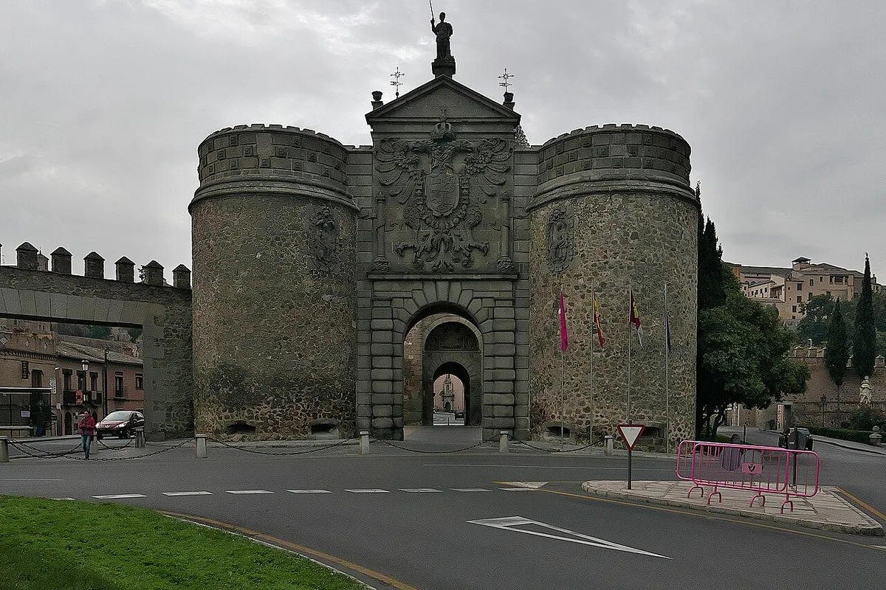
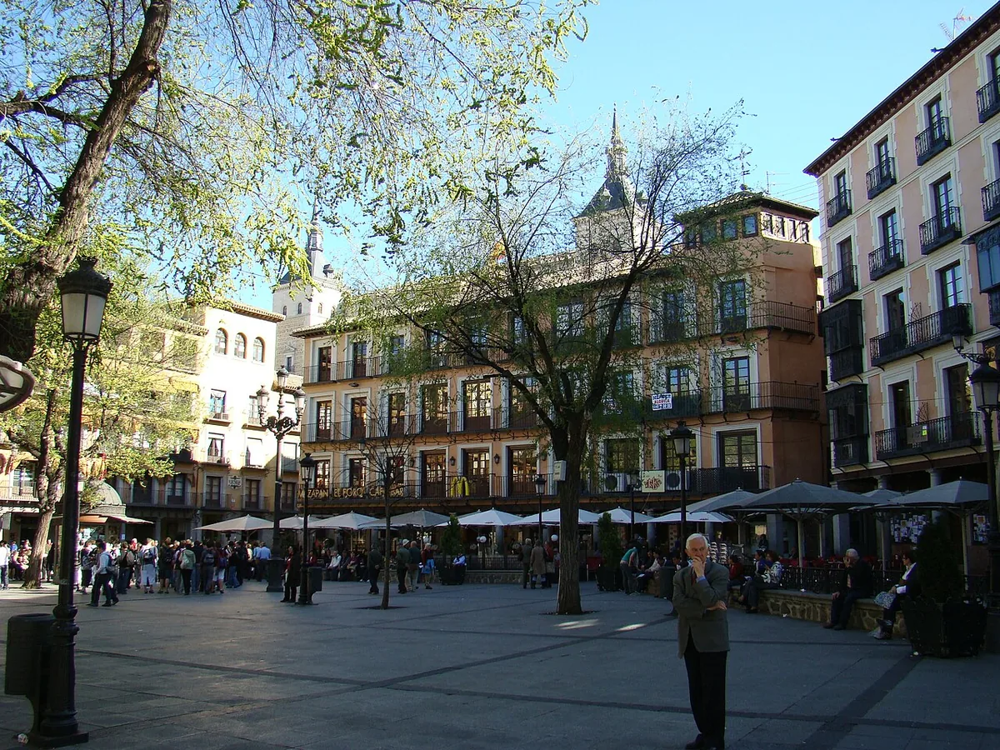
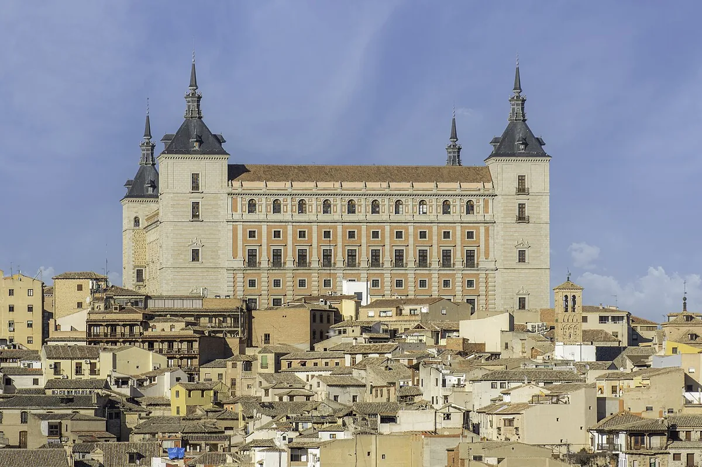
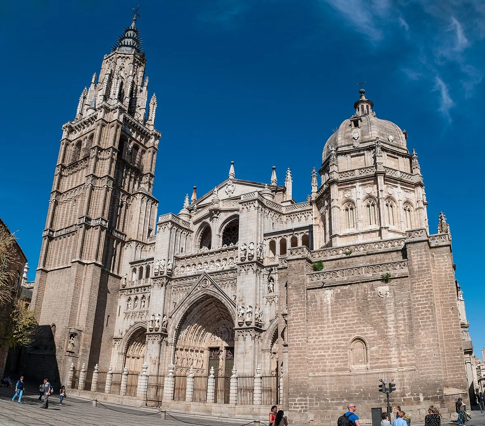
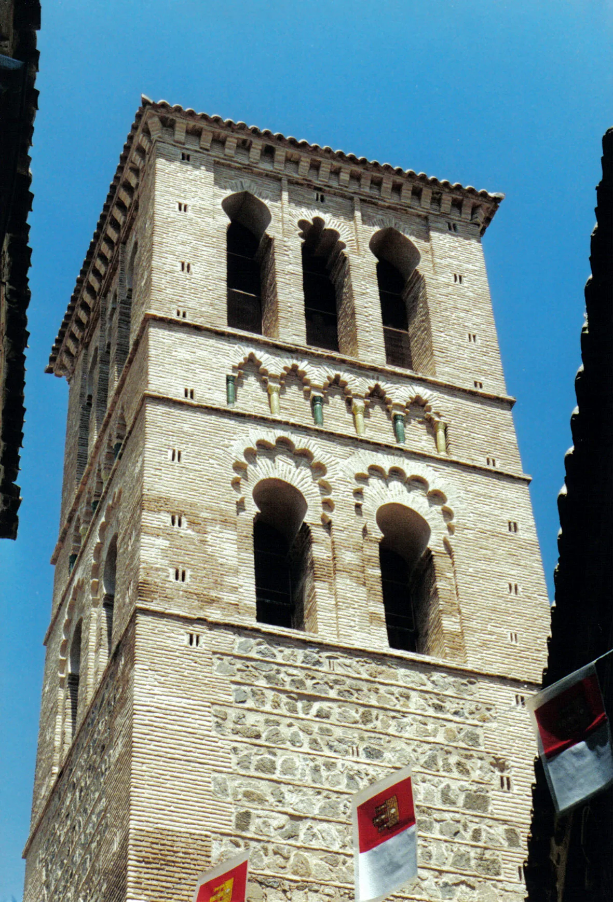
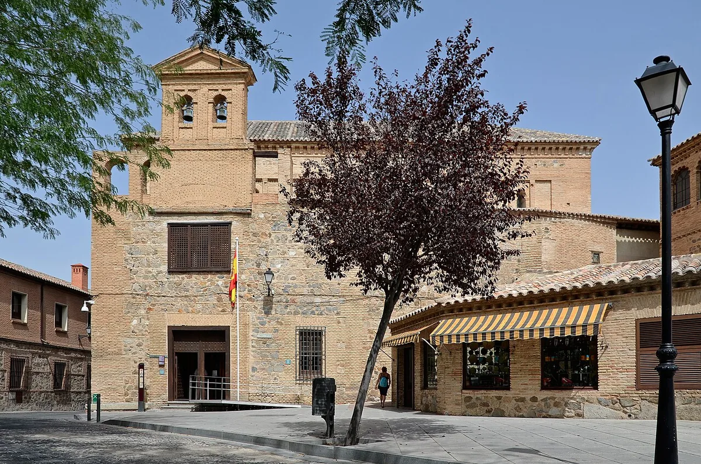
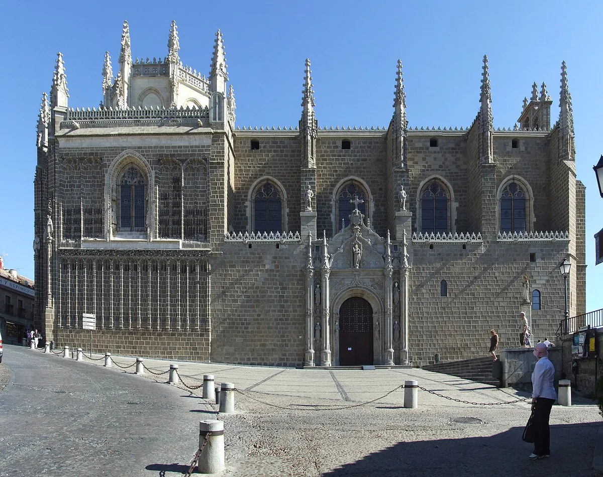
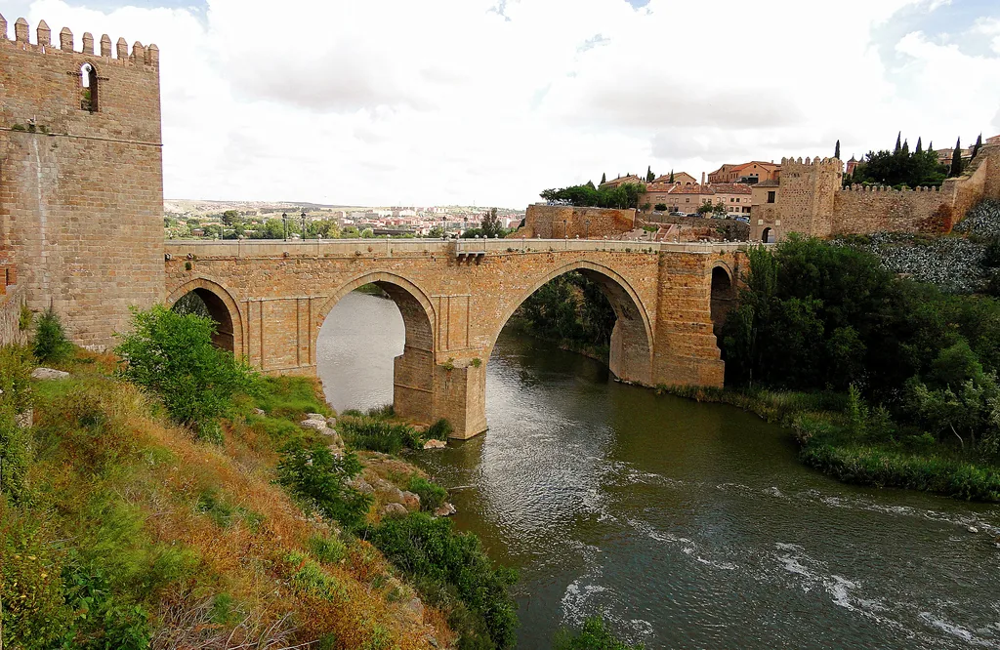

Castilla-La Mancha · Patrimonio de la Humanidad desde 1986
Toledo
Toledo es una ciudad construida sobre una roca, rodeada por el Tajo y cerrada por murallas. Fue capital visigoda, capital de Castilla y sede de la corte imperial de Carlos V. En sus calles convivieron cristianos, musulmanes y judíos, y de esa convivencia quedan sinagogas, mezquitas convertidas y una catedral gótica descomunal. La UNESCO la declaró Patrimonio de la Humanidad en 1986. Es también la ciudad de El Greco, que la pintó con tormenta y luz vertical.
- Tiempo recomendado
- 3–4 horas para la ruta base.
- Mejor momento
- Mañana temprano; el casco se llena a mediodía.
Esta guía sin conexión
Guarda las fotos y los audios de Toledo (12,9 MB) para consultarlos sin datos. El mapa, el tiempo y los enlaces externos necesitan conexión.
Comprobando si esta guía ya está guardada…
Las fotos y los audios se guardan en este dispositivo. Puedes borrarlos cuando quieras con el botón «Borrar la descarga».
Ruta y paradas
2,7 km aproximados (estimación sobre mapa), 3–4 horas, 8 paradas.
- Distancia
- 2,7 km aproximados (estimación sobre mapa)
- Superficie
- Adoquín, losas y escaleras.
- Desnivel
- Fuerte; más de 80 metros entre el río y el Alcázar.
Alternativa de acceso
Escaleras mecánicas desde el aparcamiento de Azarquiel hasta Zocodover, y autobús turístico para la panorámica. La ruta puede dividirse en dos días o hacerse en sentido descendente.
Mapa de la ruta
Mapa interactivo con Leaflet y cartografía de OpenStreetMap. Las paradas están numeradas en el mismo orden que el recorrido. Los marcadores son una referencia visual; la lista de abajo es la alternativa navegable, con coordenadas y enlaces al mapa.
Paradas de la ruta, en orden.
- 1Puerta de Bisagra39.8624686, -4.0253156
- 2Plaza de Zocodover39.8594760, -4.0214207
- 3Alcázar39.8580056, -4.0205045
- 4Catedral Primada39.8569076, -4.0242684
- 5Iglesia de Santo Tomé39.8567503, -4.0281958
- 6Sinagoga del Tránsito39.8556830, -4.0296109
- 7Monasterio de San Juan de los Reyes39.8578215, -4.0319324
- 8Puente de San Martín39.8566828, -4.0341265
Indicaciones en Google Maps Indicaciones en OpenStreetMap
La cartografía puede no reflejar obras recientes. Para la accesibilidad, vale la lista de paradas y la ficha de cada una.
Paradas de la ruta
Parada 1: Puerta de Bisagra
- Tiempo
- 15 min
- Acceso
- Paso urbano; verificar acera
- Coordenadas
- 39.8624686, -4.0253156
Qué es
Puerta monumental de acceso a la ciudad, con el escudo imperial.
Por qué importa
Era la entrada principal para quien llegaba desde el norte.
Acceso
Paso urbano con tráfico; verificar acera y paso peatonal.
Aseo adaptado
No en la puerta.
Audio de la parada
Leer la transcripción
“Estás en la Puerta de Bisagra. Era la entrada principal de Toledo para quien llegaba desde el norte. Mira el escudo imperial de Carlos V: la ciudad quería mostrar su poder antes de que entraras. La puerta tiene dos cuerpos y un patio entre ellos, pensado para controlar el paso. Hoy hay tráfico. Cruza por el paso de peatones y mira la piedra: sigue ahí, casi igual que hace siglos.”
Parada 2: Plaza de Zocodover
- Tiempo
- 20 min
- Acceso
- Llana; llegada de escaleras mecánicas
- Coordenadas
- 39.8594760, -4.0214207
Qué es
Plaza mayor de Toledo, antigua plaza de mercado.
Por qué importa
Es el centro de la ciudad y el nudo de transporte.
Acceso
Llana y amplia; aquí llegan las escaleras mecánicas desde el río.
Audio de la parada
Leer la transcripción
“Esta es la Plaza de Zocodover. Su nombre viene del árabe y significa mercado de bestias. Aquí se vendían caballos y se celebraban fiestas. Hoy es el centro de Toledo: bares, tiendas y autobuses. Es llana y amplia, y aquí llegan las escaleras mecánicas que suben desde el río. Si vienes con movilidad reducida, este es el punto más cómodo para empezar la visita.”
Parada 3: Alcázar
- Tiempo
- 40 min
- Acceso
- Cuesta; confirmar acceso y ascensor
- Coordenadas
- 39.8580056, -4.0205045
Qué es
Fortaleza y palacio, hoy sede del Museo del Ejército.
Por qué importa
Domina la ciudad y resume su historia militar.
Acceso
Cuesta fuerte; confirmar ascensor y recorrido adaptado.
Audio de la parada
Leer la transcripción
“El Alcázar de Toledo domina la ciudad desde lo más alto. Fue fortaleza romana, palacio visigodo, residencia de Carlos V y academia militar. Durante la Guerra Civil quedó en ruinas y se reconstruyó. Hoy es el Museo del Ejército. La subida desde Zocodover es corta pero empinada. Pregunta por el ascensor y el recorrido adaptado antes de entrar. Desde el exterior ya se entiende su posición defensiva.”
Parada 4: Catedral Primada
- Tiempo
- 40 min
- Acceso
- Confirmar puerta adaptada
- Coordenadas
- 39.8569076, -4.0242684
Qué es
Catedral gótica, sede del primado de España.
Por qué importa
Su interior guarda la sacristía, el transparente y obras de El Greco, Goya y Velázquez.
Acceso
Confirmar puerta adaptada y recorrido sin escalones.
Audio de la parada
Leer la transcripción
“La Catedral Primada es gótica, del siglo trece, y es enorme. Tiene cinco naves y una capilla mayor con rejería. En la sacristía hay obras de El Greco, Goya y Velázquez. El transparente, detrás del altar, es una escultura de mármol y luz. Para entrar, confirma la puerta adaptada y el itinerario sin escalones. La catedral es oscura y fresca: un buen refugio en verano.”
Parada 5: Iglesia de Santo Tomé
- Tiempo
- 20 min
- Acceso
- Calle estrecha; confirmar
- Coordenadas
- 39.8567503, -4.0281958
Qué es
Iglesia mudéjar que guarda el Entierro del conde Orgaz.
Por qué importa
Es una de las obras clave de El Greco y de la pintura española.
Acceso
Calle estrecha y entrada con umbral; confirmar.
Audio de la parada
Leer la transcripción
“Esta es la Iglesia de Santo Tomé. Dentro está el Entierro del conde Orgaz, la obra más famosa de El Greco. El cuadro muestra el entierro del señor de Orgaz y, arriba, la gloria. Fíjate en los rostros: muchos son retratos de toledanos de la época. La iglesia está en una calle estrecha, con umbral en la entrada. Confirma el acceso antes de entrar y no te pierdas los detalles del cuadro.”
Parada 6: Sinagoga del Tránsito
- Tiempo
- 30 min
- Acceso
- Confirmar acceso adaptado
- Coordenadas
- 39.8556830, -4.0296109
Qué es
Sinagoga del siglo XIV, hoy Museo Sefardí.
Por qué importa
Conserva yeserías mudéjares y cuenta la historia de los judíos en España.
Acceso
Confirmar rampa y ascensor al museo.
Audio de la parada
Leer la transcripción
“La Sinagoga del Tránsito es del siglo catorce. Fue construida por Samuel ha-Leví, tesorero del rey Pedro I. Mira las paredes: están cubiertas de yeserías con versos y motivos vegetales. No hay imágenes, porque la tradición judía no las permite. Hoy es el Museo Sefardí y cuenta la historia de los judíos en España. Pregunta por el ascensor y el recorrido adaptado.”
Parada 7: Monasterio de San Juan de los Reyes
- Tiempo
- 25 min
- Acceso
- Confirmar acceso; cuesta
- Coordenadas
- 39.8578215, -4.0319324
Qué es
Monasterio franciscano de los Reyes Católicos.
Por qué importa
Su claustro y su fachada son una joya del gótico isabelino.
Acceso
Cuesta y pavimento irregular; confirmar.
Audio de la parada
Leer la transcripción
“Este es el Monasterio de San Juan de los Reyes. Lo mandaron construir los Reyes Católicos para conmemorar la victoria de Toro. Su fachada está llena de cadenas: son las de los cristianos liberados de Granada. El claustro es gótico isabelino, con arcos y jardín. La calle sube y el pavimento es irregular. Si necesitas evitar la cuesta, puedes ver la fachada desde abajo y volver por la misma calle.”
Parada 8: Puente de San Martín
- Tiempo
- 20 min
- Acceso
- Peatonal; piedra irregular
- Coordenadas
- 39.8566828, -4.0341265
Qué es
Puente medieval sobre el Tajo, con torres en los extremos.
Por qué importa
Era la entrada desde el oeste y ofrece una vista única de la ciudad.
Acceso
Peatonal; piedra irregular y pendiente.
Audio de la parada
Leer la transcripción
“Terminamos en el Puente de San Martín. Es medieval, con dos torres, y cruza el Tajo. Era la entrada desde el oeste y servía para controlar el camino. Desde aquí se ve Toledo entera, subida a su roca. El puente es peatonal, con piedra irregular y pendiente. Camina despacio y usa la barandilla. Si puedes, espera al atardecer: la ciudad se vuelve naranja y el río refleja las murallas.”
Accesibilidad
Datos recogidos de fuentes oficiales y de OpenStreetMap. La columna «Estado» indica si el dato está verificado en sitio.
| Campo | Valor | Fuente | Estado |
|---|---|---|---|
| Superficie predominante | Adoquín, losas y piedra | Observación/OSM | pendiente |
| Pendiente | Fuerte; el casco sube desde el río | Observación | pendiente |
| Escalones | Muy frecuentes; calles escalonadas | Observación | pendiente |
| Aseos adaptados | Oficina de Turismo y museos, confirmar | Turismo | pendiente |
| Plazas PMR | Ver tabla; pocas en el casco | OSM | pendiente |
| Bucle magnético | No confirmado | — | pendiente |
| Braille | No confirmado | — | pendiente |
| Lengua de signos | Visitas concertadas, consultar | Turismo | pendiente |
| Lectura fácil | Consultar en Oficina de Turismo | Turismo | pendiente |
| Audioguía | Catedral, Alcázar y Sinagoga | Turismo | pendiente |
| Perro de asistencia | Permitido en vía pública; confirmar en monumentos | — | pendiente |
| Descanso | Bancos en Zocodover y plazas | Observación | pendiente |
Clima
Open-Meteo, consulta del 2/11/2026 a las 20:45.
- Ahora
- 12,0 °C; sensación 9,4 °C; parcialmente nublado; viento 5,5 km/h; humedad 51 %.
- Hoy
- mínima 6,7 °C; máxima 19,5 °C.
- Mañana
- mínima 6,8 °C; máxima 15,7 °C.
- Pasado mañana
- mínima 3,0 °C; máxima 15,3 °C.
El tiempo se consulta a Open-Meteo al abrir la página y se actualiza cada 5 minutos. La consulta se envía desde tu navegador; no se guardan datos personales.
En verano el calor se acumula en el casco y no hay sombra en muchas calles. En invierno hiela y el adoquín resbala. Lleva agua y calzado con agarre.
Emergencias
Emergencias · 24 horas
112Gratuito desde cualquier teléfono. Funciona sin datos y sin geolocalización. Si no puedes hablar, intenta enviar un mensaje o pedir ayuda a alguien cerca.
| Categoría | Nombre | Teléfono | Dirección | Estado |
|---|---|---|---|---|
| General | Emergencias | 112 | — | verificado |
| Policía Nacional | Policía Nacional | 091 | — | verificado |
| Guardia Civil | Guardia Civil | 062 | — | verificado |
| Emergencias sanitarias | Sescam 112 | 112 | — | verificado |
| Bomberos | Bomberos | 080 | — | verificado |
| Policía Local | Policía Local de Toledo | 092 | — | pendiente |
| Hospital | Hospital Universitario de Toledo | — | Av. del Barber, 30 | pendiente |
| Farmacias | Colegio Oficial de Farmacéuticos de Toledo | — | — | pendiente |
No publicamos teléfonos locales sin confirmación. El 112 y los números nacionales funcionan siempre.
Aparcamiento accesible
Datos de OpenStreetMap (Overpass, 2/11/2026). No verificados.
| Nombre | Coordenadas | Plazas | Plazas PMR | Coste | Tipo / superficie | Estado |
|---|---|---|---|---|---|---|
| Aparcamiento Azarquiel | 39.8625244, -4.0155846 | 540 | 11 | Gratis | Superficie | pendiente |
| Estacionamiento minusválidos | 39.8567125, -4.0266985 | 2 | 2 | — | Calle | pendiente |
| Plaza PMR junto al casco | 39.8611370, -4.0219843 | 4 | 4 | Pago | Calle | pendiente |
| Plaza PMR junto al casco | 39.8593996, -4.0197345 | 19 | 2 | Pago | Calle | pendiente |
El aparcamiento de Azarquiel está al otro lado del Tajo y conecta con Zocodover por escaleras mecánicas. Es la opción más usada por quienes visitan en coche, pero el ascenso mecánico puede no servir a todas las personas: confirma alternativas y el funcionamiento antes de viajar.
Transporte accesible
| Modo | Operador | Accesibilidad | Contacto | Enlace | Tiempo real |
|---|---|---|---|---|---|
| Autobús urbano | Servicio municipal | Flota con rampa, confirmar vehículo | Ayuntamiento | toledo.es | No |
| Autobús turístico | Servicio turístico | Confirmar rampa y espacio para silla | Turismo | — | No |
| Tren | Renfe Avant y Media Distancia | Andenes adaptados; asistencia Atendo | 912 320 320 | renfe.com | Sí, en app |
| Taxi | Radio Taxi Toledo | Confirmar vehículo adaptado | Consultar | — | No |
Recomendación: Llegar en tren o autobús, subir a Zocodover y planificar la ruta desde allí. Evitar el coche dentro del casco: las calles son estrechas y muchas son peatonales o de acceso restringido.
Estado: Pendiente; confirmar flota y asistencia.
Fotos
Imágenes de Wikimedia Commons con licencia libre. El crédito aparece bajo cada foto y en la página de créditos.

._Fachada_septentrional.jpg){kind=link}





.jpg){kind=link}







_2011-05-27.jpg){kind=link}